The short version. Put a node on the map, choose its radio and antenna, press Calculate coverage, and read the coloured area. When you want a straight answer about one particular spot or another node, use Check a link instead.
In the screenshots, the pink numbers and boxes mark the parts being explained; they are not part of the planner itself. The example plan is a rooftop node in Keswick in England’s Lake District, shown on the Topo base map. Yours will look the same, just over your own area.
Step 1 Open the planner
Press Open the planner on the home page. You get a map on the right and the controls on the left. Nothing is calculated until you ask, so a blank map is normal. On a phone the controls sit in a panel at the bottom; use Show controls ▴ to open it.
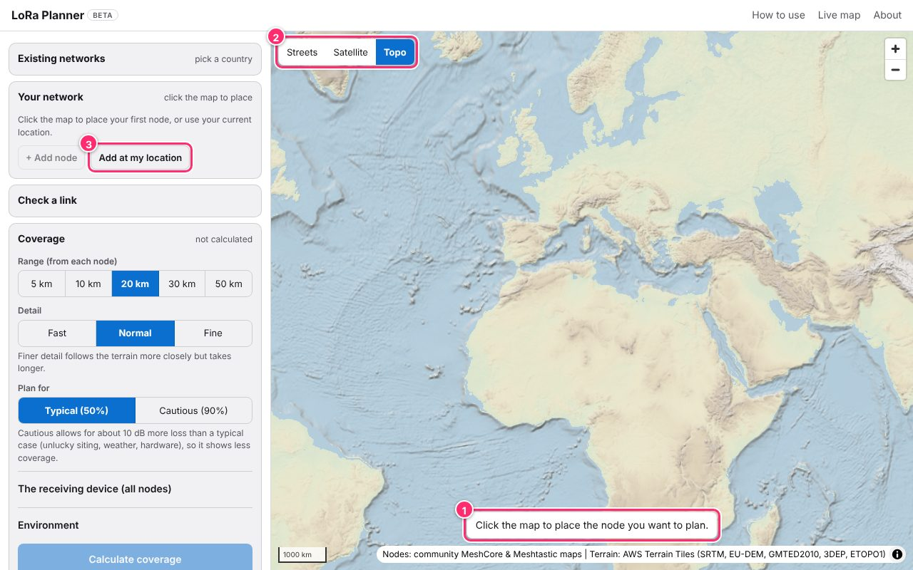
- The prompt Click the map to place the node you want to plan. This is the quickest way to start.
- Base map Streets, Satellite or Topo. Topo is drawn from the same elevation data the calculation uses, with contour lines, so it is the best one for judging hills. If the street map cannot load, the planner switches to Topo for you.
- Add at my location Your browser asks permission first. The position is used only to drop the pin in the right place.
The left-hand controls are in four sections, from top to bottom: Existing networks (nodes people already run), Your network (the nodes you are planning), Check a link, and Coverage. Click a section’s title to open or close it.
Step 2 Place your first node
Zoom to where the node will go and click the map, or press Add at my location. A numbered pin appears and the node gets a card under Your network. Give it a name in the Name box (here, “Home”). You can have up to 10 nodes in one plan.
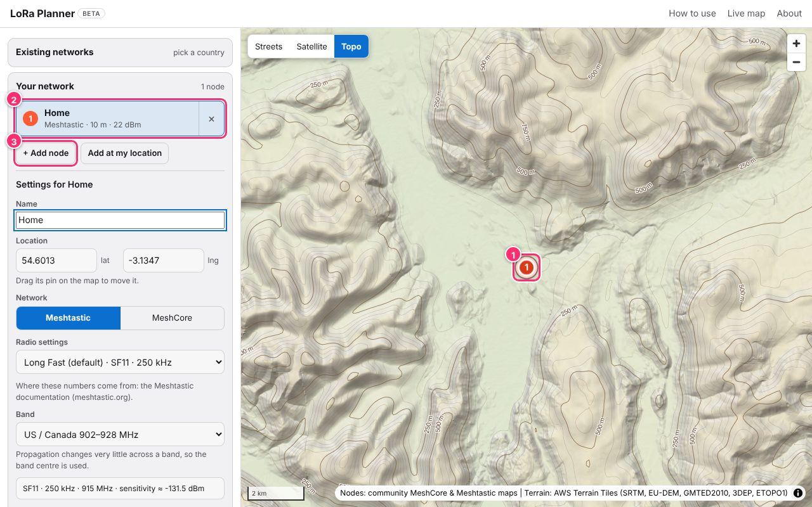
- The pin Drag it to move the node. You can also type an exact latitude and longitude in the Location boxes below the name.
- The node card Shows the network, antenna height and transmit power. Click a card to select that node (its settings appear underneath); the × removes it. After you calculate, each card also shows how much area that node covers.
- + Add node Adds another node (Step 6). Press Esc to cancel if you change your mind while placing.
Step 3 Describe the node
Under Settings for Home, tell the planner what the real device will be. The radio settings must match the devices you will talk to, and the antenna and height are what shape the result.
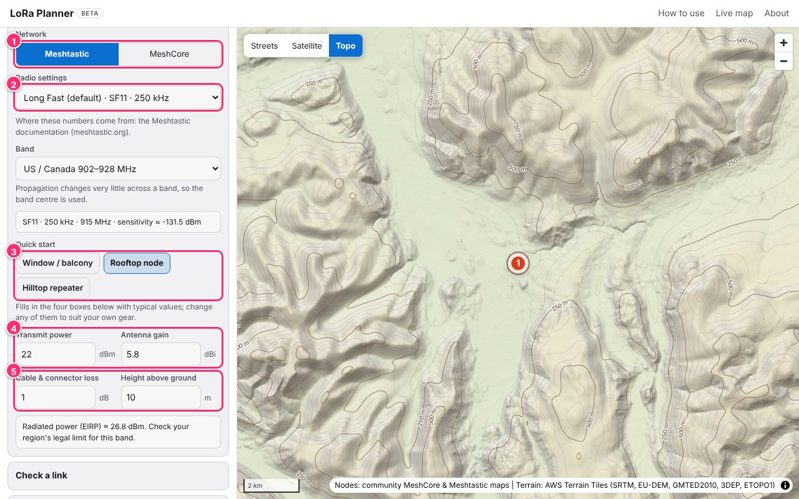
- Network Meshtastic or MeshCore. Switching it changes the list of radio presets below.
- Radio settings Pick the preset your devices use (for Meshtastic, Long Fast is the default). Custom lets you enter spreading factor, bandwidth and frequency yourself. The grey box under Band shows the result, including the sensitivity: the weakest signal that radio can still decode (a more negative number is better).
- Quick start Not sure what to enter? These fill in the four boxes below with typical values: Window / balcony (5 m, 2 dBi antenna), Rooftop node (10 m, 5.8 dBi, 1 dB cable loss) and Hilltop repeater (15 m, 8 dBi, 1.5 dB cable loss). Change any box afterwards to match your own gear.
- Transmit power and antenna gain In dBm and dBi, as printed on the device and antenna.
- Cable loss and height above ground Cable and connector loss in dB, and how high the antenna is above the ground it stands on. The hill’s own height comes from the terrain data, so do not add it here.
Check your local rules. The planner shows the radiated power (EIRP) for your settings. Legal limits differ by country and band, so check yours.
Step 4 Calculate coverage
Open the Coverage section, choose how far to look, and press the big button. The planner downloads the terrain around your node and works out the signal across it, all in your browser.
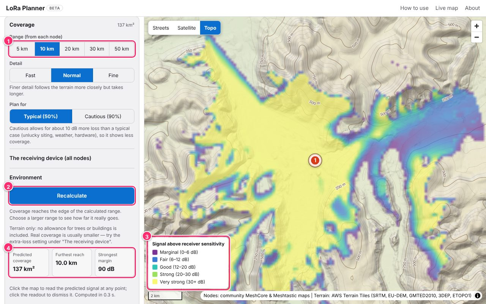
- Range How far from each node to calculate: 5, 10, 20, 30 or 50 km. Start with 10 or 20 km. If the planner says coverage reaches the edge of the range, choose a larger one. Under it, Detail trades speed for accuracy (Fast, Normal, Fine) and Plan for chooses Typical (50%) or Cautious (90%), which allows about 10 dB more loss and so shows less coverage.
- Calculate coverage The button reads Calculate coverage the first time. After a result exists it reads Recalculate, or Update coverage if you have changed something since.
- Legend The colour is how far the predicted signal is above the weakest the receiver can use: Marginal 0–6 dB, Fair 6–12, Good 12–20, Strong 20–30, Very strong 30+. No colour means the model predicts no usable signal there.
- Summary Total area covered, the furthest reach from the node, and the strongest margin anywhere.
Why is so much of it yellow? The model sees the shape of the ground, not trees, buildings or weather, so it is optimistic. Step 7 shows how to allow for that.
Step 5 Read the result
Colours are a good overview. To find out what happens at one particular place, click it.
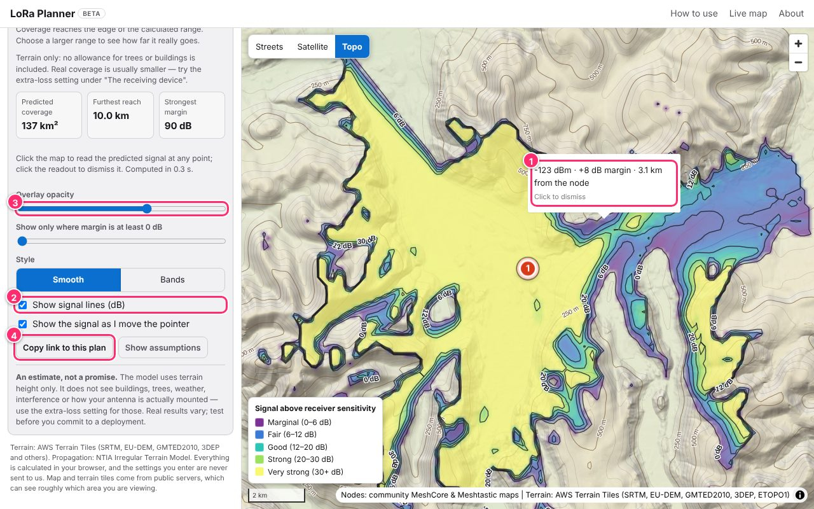
- Click the map A small pop-up gives the predicted signal in dBm, the margin in dB and the distance from the node. Click the pop-up to dismiss it. With Show the signal as I move the pointer ticked, the same figures follow your pointer without clicking.
- Show signal lines (dB) Draws lines where the signal crosses the edge of each colour band, labelled in dB, which makes the shape of the coverage easier to see.
- Overlay opacity Fade the colours to see the map underneath. The slider below it, Show only where margin is at least…, hides the weak areas. Setting it to 10 dB leaves only places with a comfortable safety cushion. Style switches between smooth colour and flat bands.
- Copy link to this plan See Share your plan.
What is “margin”? It is the spare signal. 0 dB means the signal is exactly as strong as the receiver needs, so any fading breaks it. About 10 dB or more leaves room for weather, foliage and a bad day.
Step 6 Add more nodes
Press + Add node, then click the map where the next node goes. A new node starts with the settings of the node you had selected, so you only change what differs. Here a second node, “Hill repeater”, was placed on the hillside to the north and given the Hilltop repeater quick start. Press Calculate coverage for 2 nodes to see both together.
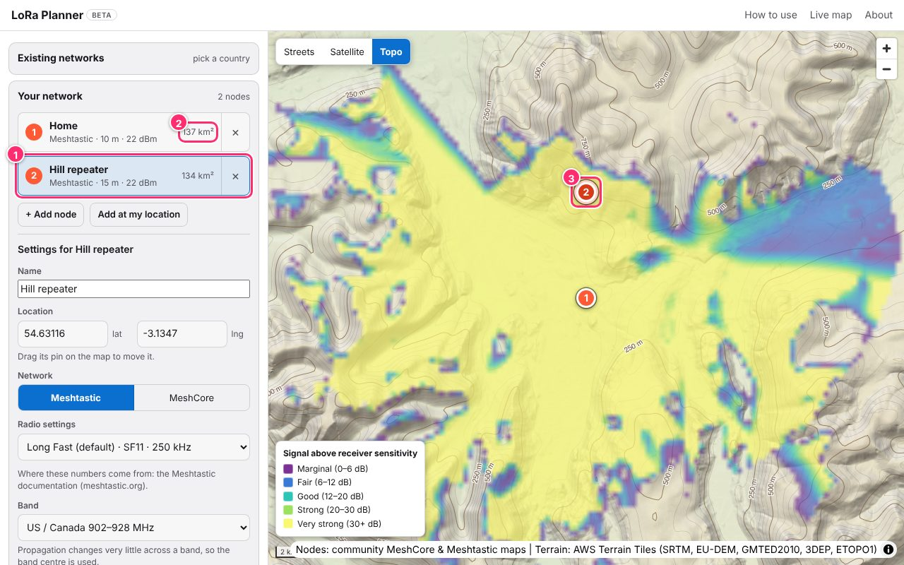
- The selected node The highlighted card is the node whose settings are showing below it. Click either card to switch.
- Each node’s own coverage The area that node alone covers, in km².
- The new pin Both nodes are on the map and both are included in the one overlay.
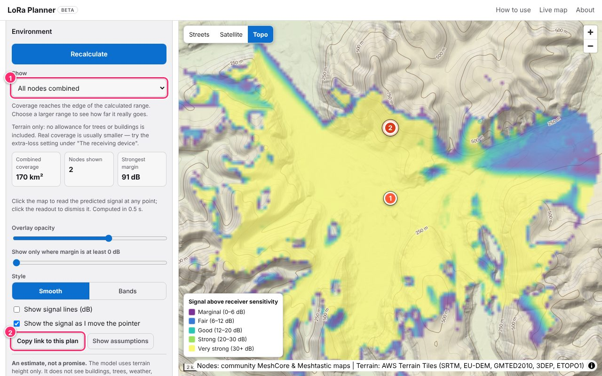
- Show Choose All nodes combined or one node on its own. In the combined view each point takes the strongest signal from any node, and Combined coverage is the area where at least one node reaches.
- Copy link to this plan Copies a web address that reopens exactly this plan (see Share your plan).
Step 7 The receiving device and extra loss
Coverage means “where a device like this could hear your nodes”. Open The receiving device (all nodes) in the Coverage section to describe that device. These settings are shared by every node in the plan.
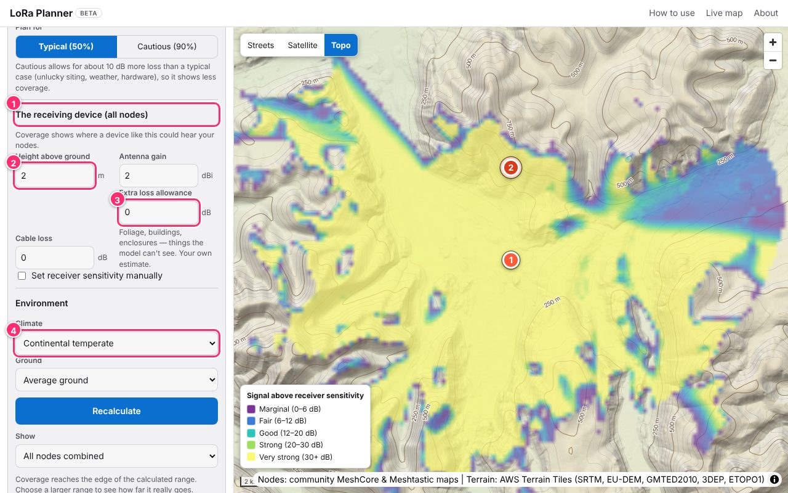
- The receiving device Starts at a hand-held style receiver: 2 m high, 2 dBi antenna, no cable loss. Change it if you are planning for, say, a roof antenna instead.
- Height above ground How high the receiving antenna is. It also sets the default height of the far end of a point-to-point link (Step 8), where you can override it for that link only.
- Extra loss allowance The planner cannot see trees, buildings or the inside of a house. This box is how you account for them: a number of dB subtracted from every signal. There is no single right value, so try a few (for example 5, 10 and 15 dB) and watch the coverage shrink; test on air to see which matches your area.
- Environment Climate and Ground change how the model treats the air and the earth. The defaults suit most places; change them only if you know your area differs (for example sea water or very dry ground).
There is also a Set receiver sensitivity manually tick box, for when you know the real figure for your receiver and want to use it instead of the one worked out from the radio preset.
Step 8 Check a link (point to point)
Coverage asks “where can my node be heard?”. Check a link asks a narrower question: “will this node and that spot hear each other, and if not, why?” It draws the ground between the two ends so you can see what is in the way.
8a. Choose the two ends
A link has two ends, and each drop-down chooses one of them.
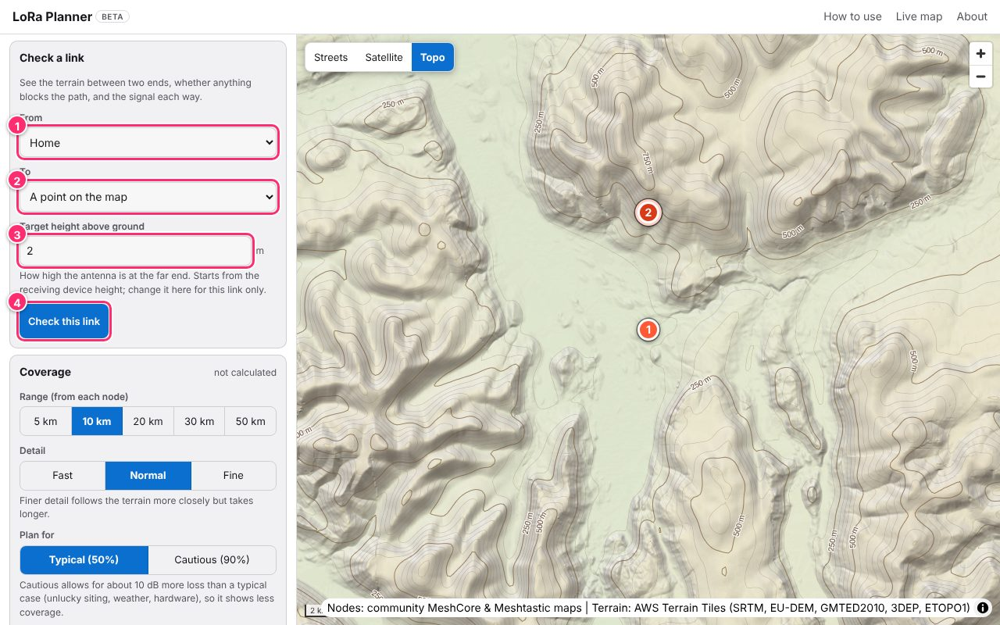
- From Your node at the first end (end A). It is always one of your planned nodes, because the planner needs that node’s power, antenna and radio settings.
- To The other end (end B). Choose A point on the map, or one of your other nodes. With only one node in your plan the only choice is a point.
- Target height above ground Appears when To is a point on the map: how high the antenna is at that far spot. It starts at the receiving-device height from Step 7, and changing it here affects only this link.
- Check this link Opens the link panel on the right. If you chose a point, click the map to place it.
| If “To” is… | Which ways it is checked | Where the far-end settings come from |
|---|---|---|
| A point on the map | One way: from your node to the spot. | The far end acts as a receiving device: the shared settings from Step 7, with its own Target height above ground set here. |
| Another of your nodes | Both ways, each shown separately. | That node’s own power, antenna, cable loss, radio settings and height (set on its card in Your network). |
8b. Read the link panel
The panel appears on the right once the far end is chosen. This example checks Home to a spot 2.5 km to the south-west with a 2 m target.
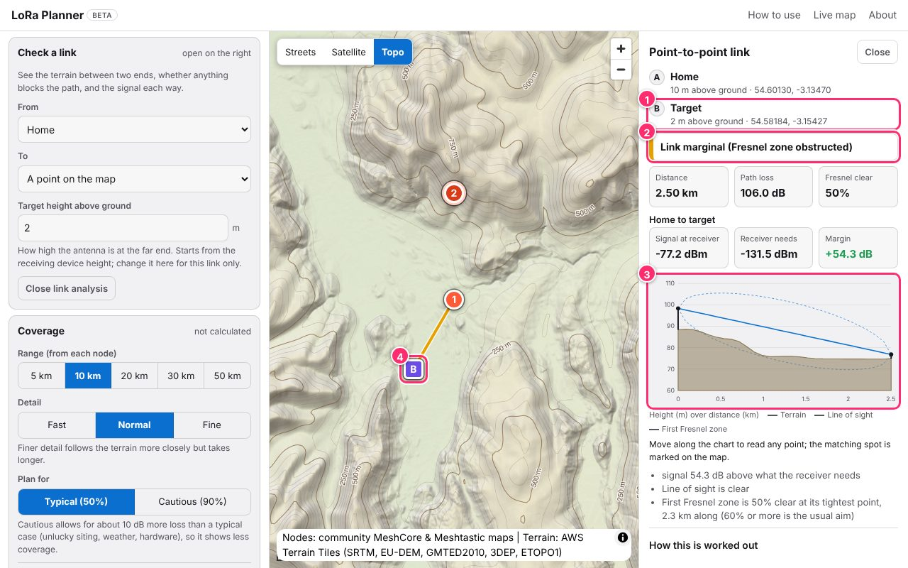
- The two ends Each shows its name, its antenna height above ground and its coordinates. End B here is “Target”, 2 m above ground.
- The verdict A plain-language summary. Looks good needs a margin of 10 dB or more in every direction, a clear line of sight, and at least 60% of the first Fresnel zone clear. Marginal means it may work but one of those fails, and the headline says which. Unlikely means the signal is below what the receiver needs. The link line on the map takes the same colour.
- The profile chart A side-on slice of the ground between the ends. The brown shape is the terrain, the solid blue line is the straight line of sight, and the dashed oval is the first Fresnel zone. The ground is bent upwards in the middle to allow for the curve of the earth. Move along the chart with the mouse, a finger or the arrow keys to read any point; the matching spot is marked on the map.
- Marker B Drag it to try another spot and the panel updates. If the ground blocks the line of sight, a red dot on the map shows where.
The numbers above the chart:
- Distance
- Straight-line distance between the ends.
- Path loss
- How much signal is lost on the way, in dB. Lower is better. It comes from the same Longley-Rice (ITM) model as the coverage map.
- Fresnel clear
- How much of the first Fresnel zone is free of ground, at its tightest point. About 60% or more is the usual aim.
- Signal at receiver
- The predicted signal strength at the far end, in dBm.
- Receiver needs
- The weakest signal the receiver can decode (its sensitivity).
- Margin
- The difference between the two: the spare signal. Green when positive.
A strong signal can still be “marginal”. In this example the margin is a healthy +54 dB, yet the verdict is marginal because the ground cuts into half of the Fresnel zone. Real signals fade, so a path with an obstructed zone can be unreliable even when the numbers look generous.
8c. Change the target’s height
The height of the far end can make the difference. Here is the same spot with the target raised from 2 m to 10 m, as if the antenna were on a mast or a roof. Type the new height into Target height above ground; the panel recalculates straight away.
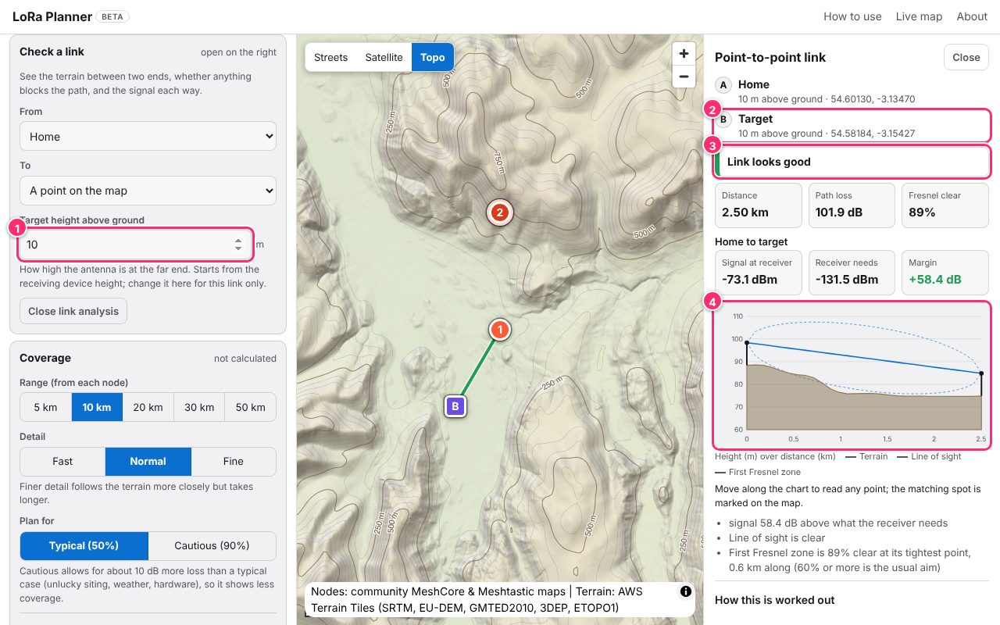
- Target height above ground Changed from 2 to 10 m. Allowed values are 0.5 to 100 m.
- End B Now reads “10 m above ground”.
- The verdict Changed from marginal to Link looks good. Fresnel clear went from 50% to 89%, and path loss fell from 106.0 dB to 101.9 dB.
- The chart The oval now sits clear of the ground at the far end, and the link line on the map turns green.
The height of end A is not set here: it is the antenna height of the node you chose in From, so change it on that node’s card under Your network.
8d. Link two of your nodes
Change To from A point on the map to one of your other nodes and the panel checks the link both ways.
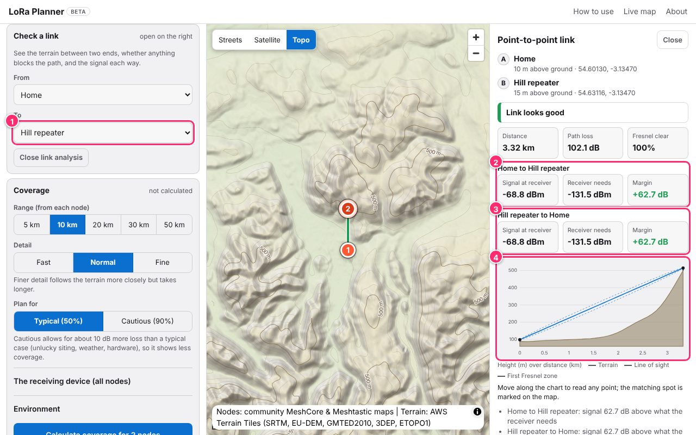
- To Now set to the other node (“Hill repeater”). Its height, 15 m here, comes from its own card.
- First direction Home transmitting, Hill repeater receiving.
- Second direction The reverse. The two usually match, but they differ when the nodes have different transmit power or antennas. The verdict uses the weaker of the two.
- The chart The path between the two nodes. Here the line of sight is clear all the way up to the hill.
Different radio settings. Two nodes can only hear each other if their spreading factor, bandwidth and frequency match. If they do not, the panel says so and the link is reported as not possible.
Press Close link analysis (or Close at the top of the panel) when you are done. Removing a node that is part of the link closes it too.
Step 9 Show existing networks
The Existing networks section, at the top of the controls, puts nodes that people already run on the same map, so you can see what your new node would join.
- Type to search and pick a country; you can add more than one.
- Tick or untick MeshCore and Meshtastic to choose which networks appear, and use Filter by device role to narrow it further.
- Click a node on the map for its name, network, role and when it was last seen. Plan a node here in that pop-up starts one of your own nodes at the same spot.
The data comes from the community MeshCore and Meshtastic maps and is refreshed about every 30 minutes. It only decorates the map: it does not change your coverage result.
If something looks wrong
The Calculate button is greyed out▾
It needs at least one node. Click the map or press Add at my location first.
The coverage looks too good to be true▾
The model knows the ground but not trees, buildings or interference. Add an extra loss allowance (Step 7), switch Plan for to Cautious (90%), or raise the Show only where margin is at least slider. Then test on air.
I cannot see the “Target height above ground” box▾
It only appears when To is set to A point on the map. When the far end is another node, that node’s own height is used; change it on its card under Your network.
The link panel says it is waiting for the other end▾
With A point on the map chosen, click the map to place the far end. You can drag it afterwards. A banner on the map reminds you, with a Cancel button.
It says some terrain was unavailable▾
The elevation tiles for part of the area did not load, and the missing ground was treated as sea level, so the result may be too optimistic there. Try again, or recalculate in a moment.
The street map did not load▾
The planner switches to the Topo map automatically. You can also choose Streets, Satellite or Topo yourself at the top of the map.
Two nodes “cannot hear each other”▾
Their radio settings differ (spreading factor, bandwidth or frequency). Give them the same preset, or accept that they are on different networks.
An estimate, not a promise. The planner models terrain only. It cannot see buildings, trees, weather, interference or how an antenna is actually mounted. Use it to decide where to try, then test before you commit to a deployment.
Words you will see
- dBm
- Signal strength. More negative is weaker: −90 dBm is stronger than −120 dBm.
- dB
- A difference between two signal strengths, such as a margin or a loss.
- dBi
- Antenna gain: how much an antenna focuses the signal compared with an ideal one.
- Sensitivity
- The weakest signal a receiver can still decode. It depends on the radio settings, such as spreading factor and bandwidth.
- Margin
- Signal above sensitivity: the spare signal. More is safer.
- Path loss
- The signal lost between the two antennas, mostly from distance and terrain.
- Line of sight
- Whether a straight line between the antennas clears the ground.
- Fresnel zone
- An egg-shaped region around the line of sight. Radio waves spread out, so ground inside it weakens the signal even when the straight line is clear. Keeping about 60% of the first zone clear is the usual aim.
- Longley-Rice (ITM)
- The propagation model from NTIA that the planner uses for terrain-based path loss.
- EIRP
- The power actually radiated: transmit power plus antenna gain minus cable loss.
Ready to try it?
Open the planner, drop a node where you are thinking of putting one, and see where it reaches.